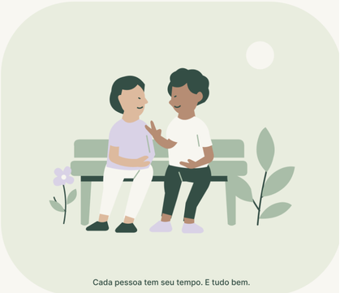

Amizade
Laços que acolhem, escuta de verdade e a liberdade de ser quem você é.
Descobrir a força das conexõesUM ESPAÇO PARA SE SENTIR E CONVERSAR
Você não precisa dar conta de tudo o tempo todo. Vamos descobrir juntos como as amizades e os pequenos hábitos podem fazer parte do seu bem-estar.
Explore os caminhos
ANTES DE TUDO
Saúde mental tem a ver com a forma como sentimos, pensamos e nos relacionamos. Não é estar feliz o tempo inteiro: é também reconhecer emoções e encontrar apoio.
Sentir faz parte. Pedir ajuda também.
APRENDA E LEVE PARA A VIDA
Escolha um tema para explorar
Laços que acolhem, escuta de verdade e a liberdade de ser quem você é.
Descobrir a força das conexõesMais descanso, movimento e equilíbrio. Um passo possível de cada vez.
Encontrar o seu ritmoQUE TAL UMA PAUSA?
Não existe resposta certa. Dê um nome ao que sente, sem se julgar.
Afaste-se das telas e perceba o seu corpo.
Encontre uma posição confortável e vá com calma.
Um copo de água, uma pausa ou uma boa conversa.
Se algo estiver difícil, converse com um adulto de confiança, com a equipe da escola ou com um profissional de saúde.
No Brasil, gratuito e disponível 24 horas.